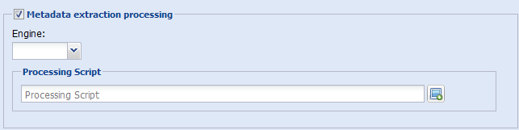
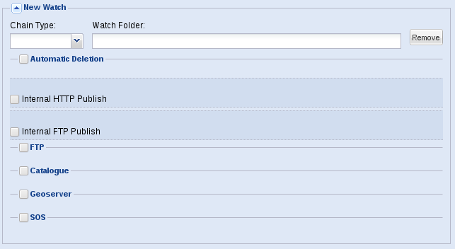

The ARMS servlet can be configured via its Graphical User Interfaces.
Connect to
http://[TOMCAT SERVER]:[TOMCAT PORT]/ArchivingServer/
The following page appears
The following sections are available in the left navigation menu
Click on configuration. The following page will be displayed.
Set the parameters according to your configuration needs:
Save the configuration by clicking the button.
This functionality allow defining the pre-processing and metadata extraction behavior associated to a specific data type. It allows also to activate the notification of the data availability.
 Note that all the operation we are going to explain will take effect only when the Save button is pressed).
Note that all the operation we are going to explain will take effect only when the Save button is pressed).
To add a new Chain Type just click on Add Chain Type.
A new "clean" Chain Type section will be added to the interface then enter the name. This name will be used as key in the WPS/REST request or in the watch definition to apply the rules you are going to define.
To remove a Chain Type just open the appropriate section and click on the Remove button.
To Remove all the Chain Types click on the "Remove All Chain Types" button.
This functionality allows you to pre-process the data before the ingestion. To add a pre processing step tick the Data pre-processing check box then enter the following parameters:
Then load the Processing Script

To add a script to automatically extract metadata from the incoming data thick the Metadata extraction processing check box then enter the following parameters:
Then load the Processing Script
To send a notification message when the data has been successfully ingested thick the Notify Options check box then enter the following parameters:
This functionality allows defining watches that will allow the automatic ingestion of the data that will be stored in the directory being watched.
Before defining a new watch you have to define a chain type for the type of data you are going to handle (if not already existing).
To add a new Watch just click on Add Watch. A new "clean" watch section will be added to the Watch List.

Select one of the available Chain Types (if you have a new type of data with different pre-processing or metadata extraction rules you need to create a new Chain Type).
Insert the full path to the directory to be watched.
Then proceed with the definition of the steps that the ARMS have to perform when a new data is ingested.
To remove a watch just open the appropriate section and click on the Remove button.
To remove all the Watches click on the "Remove All Watches" button.
By checking this check box you will activate the Automatic Deletion functionality. This parameter sets the time interval after which data shall be automatically deleted. This is typically user to implement a rolling archive.
 Note that if the Automatic Deletion Functionality have not been set, the automatic deletion time is set by default to 9999 weeks.
Note that if the Automatic Deletion Functionality have not been set, the automatic deletion time is set by default to 9999 weeks.
By checking this check box you will activate the HTTP publish functionality. The ingested data will be made available via HTTP. The HTTP URL will be put in the metadata and it will be visible in the management interface.
Note that if the generic HTTP publishing parameter have been set the data will be published on HTTP even if this setting is disabled.
By checking this check box you will activate the internal FTP publish functionality. For each new ingested data a new FTP account will be created. The FTP access credential will be will be visible in the management interface.
Note that if the generic internal FTP publishing parameter have been set the data will be published on HTTP even if this setting is disabled.
By checking this check box you will activate the external FTP publish functionality. To complete the configuration, fill the parameters as follows:
By checking this check box you will activate the metadata publishing functionality. To complete the configuration enter the URL of the catalogue where the metadata have to be harvested (e.g. http://mycatalogue.mycompany.com/cimCatalogue).
By checking this check box you will activate the publication on a GeoServer instance. To complete the configuration enter the parameters as follow:
By checking this check box you will activate the SOS publishing functionality. To complete the configuration enter the URL of the SOS server where the data have to be inserted (e.g. http://mycatalogue.mycompany.com/SOS).
Note that the data have to be SOS compliant. Thus if you have a different type of data you have to create a new chain type that convert your data via the pre-processing script.
Variable |
Type |
Description |
|---|---|---|
| Allow publishing data via WMS,WFS and WCS | Boolean | This parameter enables/disable publishing data through the WMS,WCS and WFS protocols. |
| Allow publishing data via FTP | Boolean | This parameter enables/disable publishing data through the FTP protocol. |
| Allow publishing data via HTTP | Boolean | This parameter enables/disable publishing data through the HTTP protocol. |
| Url of the Geoserver instance | URL | This parameter provides the URL of the Geoserver instance to be used to publish data. |
| Url of the catalogue instance | URL | This parameter provides the URL of the ebRIM catalogue instance to be used to store metadata. |
| Url of the archiving server | URL | This parameter provides the URL of the Archiving Servlet used for performing all tasks. |